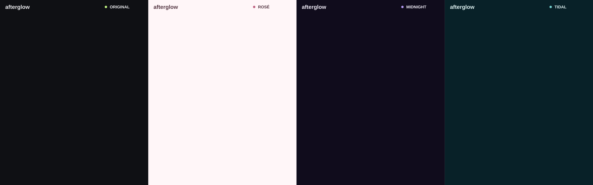
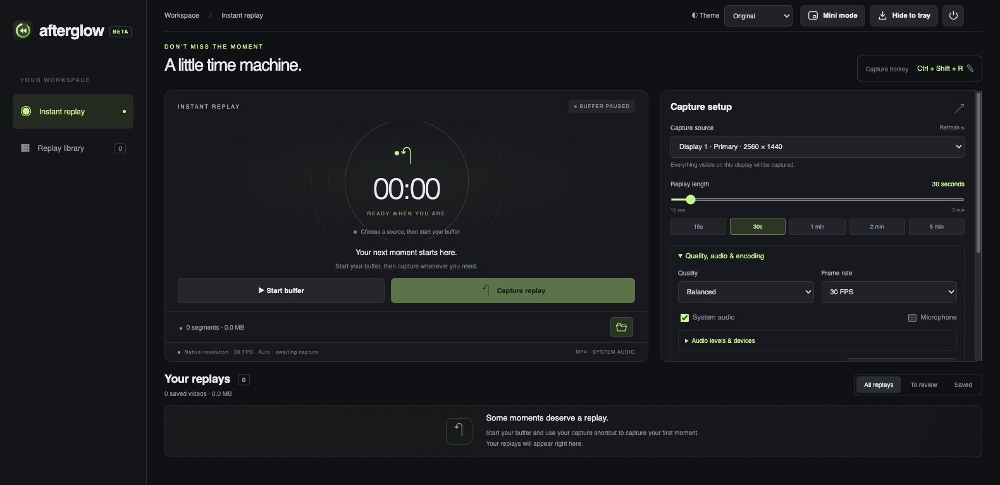
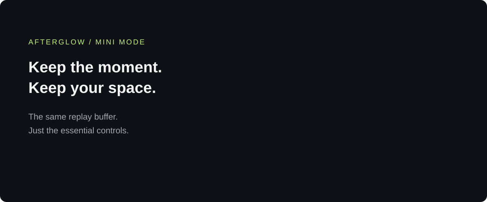

Application / Instant replay Personal project
Afterglow.
The moment happened. Keep it anyway.
Afterglow keeps a rolling history of a screen or window, so you can save a moment after it happens. Start the buffer, then use a global shortcut to capture the last 15 seconds to 5 minutes. Trim the ends, cut out unwanted sections, and save the replay as an MP4. Video and audio stay on your own machine.

Catch what just happened
Choose a screen or window and keep up to five minutes ready to capture with a global shortcut.
Keep the good parts
Trim the ends or cut out sections, preview the edit, and save a new clip without changing the original saved replay.
Sound, your way
Capture system audio, add a microphone, and adjust their levels before they’re mixed into one track.
Small when you need it
Switch to compact controls or hide to the tray while the buffer keeps running.
Made to stay yours
Store replays locally as MP4s, organised by app and date, with a library for reviewing and saving clips.
Four ways to feel at home
Original, Rosé, Midnight, and Tidal bring matching colours to the full window, mini mode, and tray icon.






How it’s built
Tech stack.
- 01
Interface
An Electron desktop app with four themes, a clip editor, global shortcuts, and mini mode
- Electron
- HTML & CSS
- JavaScript
- 02
Core service
A local Node.js service manages the replay buffer, clip library, settings, and capture recovery
- Node.js
- Local file storage
- 03
Capture & media
Captures screens and audio, uses GPU encoding when available, and trims and exports MP4 clips
- FFmpeg
- Windows capture
- WASAPI audio
- PipeWire
- GPU encoding
- 04
Delivery
Automated tests and native builds produce preview installers for Windows, macOS, and Linux
- GitHub Actions
- NSIS
Screenshots from the installed desktop preview. Preview builds are available for Windows, macOS, and Linux; capture support varies by platform.
Next projectEdgewise